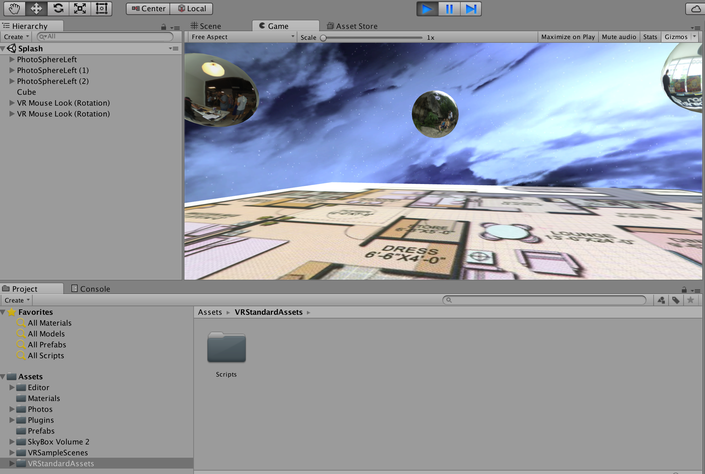

I created this camera rig during Spring 2016. I started off with 2 goPros that I rented from the UT Fine Arts Library. I tested out a few different self-designed multi-cam setups with Sony a6300's, GoPros, and Xiaomi Yis with various fisheye lenses. In the end I settled on this proprietary camera rig, which cost me ~$500. I used AutoCad Inventor 2016 to design the case, which I printed on my LulzBot Taz3 3D printer. On the software end, I experimented with VideoStitch, PTGui, Hugin, and Autopano. I ended up purchasing and using Autopano Video Pro 2 and Autopano Giga, as they offered superior quality and a student discount. More recently, I have been importing the VR media I've captured into Unity demos to explore how VR media can be used in various industries such as Real Estate, Art, and Education. For demo purposes, I used to use Google Cardboard, but have since upgraded to GearVR. I have experience in creating VR apps for both Cardboard and GearVR.
Here's my VR production studio website: http://studioforevr.com/
